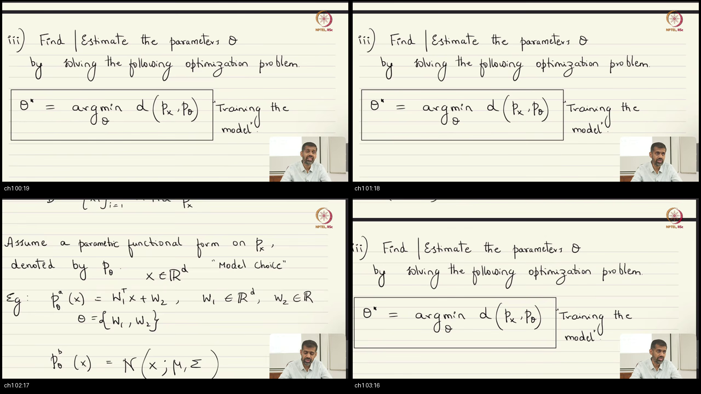
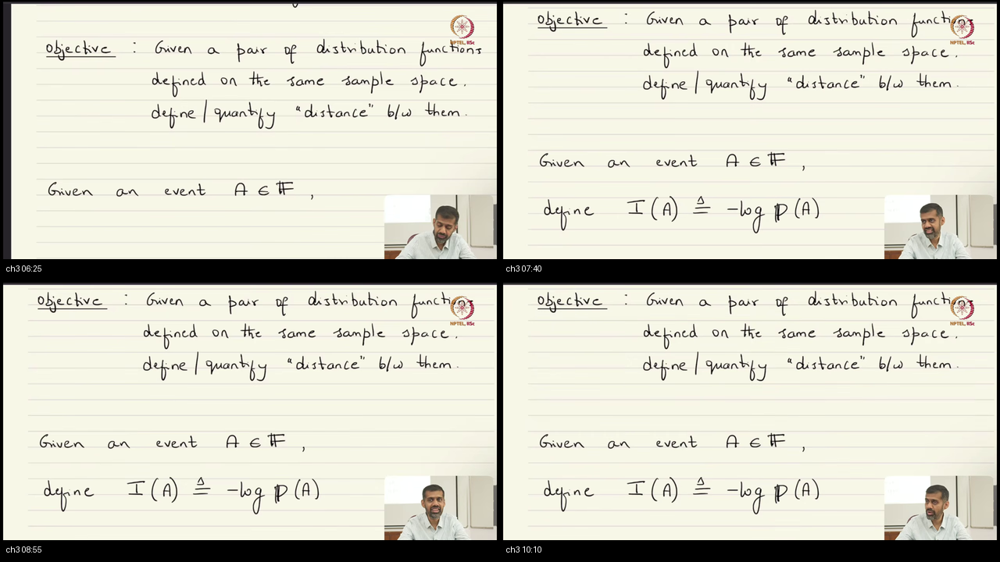

Lec 11: Entropy & Neural Network Training
Comprehensive interactive companion to NPTEL IISc Lecture 11. Solving the Machine Learning recipe: from why we need distributional distance to how Shannon entropy measures the internal surprise of a distribution.
01 Executive Summary: The Master Blueprint
In Lecture 11, the instructor reloads the 3-step ML recipe: (1) Parametric model $P_\theta$ $\longrightarrow$ (2) Distance/divergence $d(P, P_\theta)$ $\longrightarrow$ (3) Train via $\arg\min_\theta d$. To build Step 2, we first need tools from Information Theory to measure uncertainty inside a single distribution.

02 The Missing Foundation: Physical Intuition & Surprisal
The lecture establishes: Information is the amount of surprise you experience upon learning what happened.

- Full Sample Space ($\Omega$): $P(\Omega) = 1 \implies I(\Omega) = 0$ bits (something definitely happens, zero surprise).
- Null / Impossible Event ($\emptyset$): $P(\emptyset) = 0 \implies I(\emptyset) \to +\infty$ (infinite shock).
- Independence: $P(A \cap B) = P(A)P(B) \implies I(A \cap B) = I(A) + I(B)$ (chances multiply, surprises add!).
03 Mathematical Rosetta Stone
| Symbol | Spoken Phonetics | Plain-English Meaning | Role in Deep Learning |
|---|---|---|---|
| $I(x) = -\log_2 p(x)$ | "eye of ex" (Surprisal) | Surprise score of an individual outcome in bits. | Rare tokens deliver higher gradient shock than common words. |
| $H(P) = -\sum p_i \log_2 p_i$ | "aych of pee" (Entropy) | Nature's unavoidable average surprise. | Baseline randomness of training data; compression limit. |
| $H(P, Q) = -\sum p_i \ln q_i$ | "cross-entropy of P and Q" | Penalty when model $Q$ predicts reality $P$. | Standard classification loss (nn.CrossEntropyLoss). |
| $\nabla_z \mathcal{L} = \hat{p} - y$ | "gradient equals p-hat minus y" | Error signal: Predicted minus Truth. | The clean linear subtraction driving backpropagation. |
04 Modern 3D Probability Simplex & Interactive Entropy Dome
For 3 discrete outcomes ($p_1 + p_2 + p_3 = 1$), all possible distributions live on an equilateral triangle (the 2-Simplex). Plotting Entropy $H(P)$ above this surface creates a 3D Mountain / Dome:
05 Contrastive Analysis: Why CCE & The MSE Vanishing Gradient Trap
Why not use Mean Squared Error for classification? Because of the Sigmoid saturation derivative $\sigma'(z) = \hat{p}(1-\hat{p})$.
• MSE Gradient: $\frac{\partial \mathcal{L}_{\text{MSE}}}{\partial z} = 2(\hat{p} - 1) \cdot \hat{p}(1 - \hat{p}) \approx 2(-1) \cdot (0.0000454)(0.99995) \approx \mathbf{-0.00009} \to 0$.
The gradient completely vanishes! The network is dead wrong, yet learning freezes.
• CCE Gradient: $\frac{\partial \mathcal{L}_{\text{CCE}}}{\partial z} = -\frac{1}{\hat{p}} \cdot \hat{p}(1 - \hat{p}) = \hat{p} - 1 \approx 0.0000454 - 1 \approx \mathbf{-1.00}$.
The $-\frac{1}{\hat{p}}$ log term cancels the $\hat{p}$ saturation term, delivering the maximum possible corrective kick!